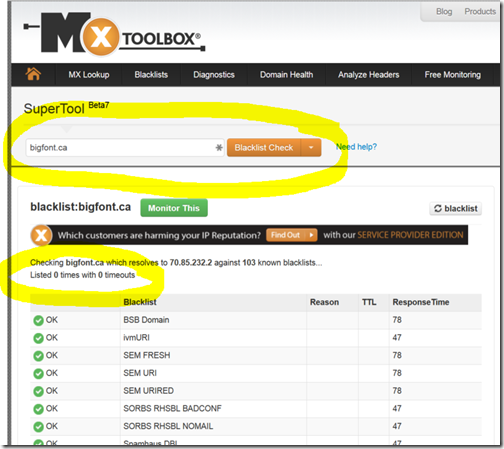

How to do an email blacklist check.
Along with cache invalidation and even more than search engine optimization, email spam filters (and how to avoid them) are one of the most persistent mysteries of the Internet. When using a custom domain (e.g. shaun@bigfont.ca) I would love to know how to avoid Google's and Microsoft's spam filters. It's hard. I don't have the answer. I don't know anyone who does. Here's what I do, though, to test whether emails under our control are going into spam.
Option 1 - Highly Recommended
Currently, we're doing a low tech email blacklist check.
- Setup both a Gmail.com and an Outlook.com email address (e.g. spam4782374@outlook.com).
- Within those accounts, do not put any domains onto safe lists, so the accounts are just like those of potential laypersons.
- Once a month, send an email from each of the domain accounts we manage, to test whether the Google and Microsoft spam filters catch the email.
This is the most direct and reliable way to test.
Option 2 - Recommended
We've long been aware of the MX TOOLBOX network diagnostics service. One tool is their Email Black List Check. As of today, it checks a domain against 103 known blacklists.
- Go to http://mxtoolbox.com/SuperTool.aspx
- Choose Blacklist Check.
- Add a domain of interest.
- Click Blacklist Check.
Be cautious about the results. Just because a mail server is not listed on any blacklists, it still might not pass junk mail filters. Recently, we helped a client with email forwarding and sending, because his junk mail filters were routinely filtering both. Oddly, MX TOOLBOX showed zero blacklist results for both the primary domain and its mail server, even though the Outlook.com spam filter was gobbling them.
Results for bigfont.ca
{kind=link}
This can be misleading, because although bigfont.ca is not blacklisted, the mail server that we use might be. What if we were using Namepro (which happens to be our preferred host.)
Results for namespro.ca
(we also tested mailroot4.namespro.ca)
{kind=link}
Do you know the answer. Maybe you can help me out @dicshaunary on Twitter with the answer, of how to avoid junk filters with new custom domains.